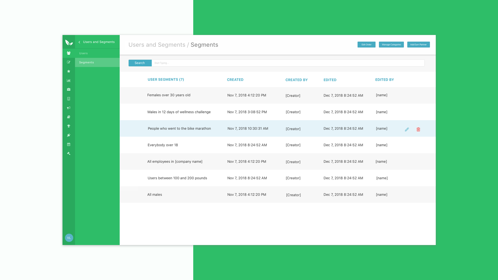
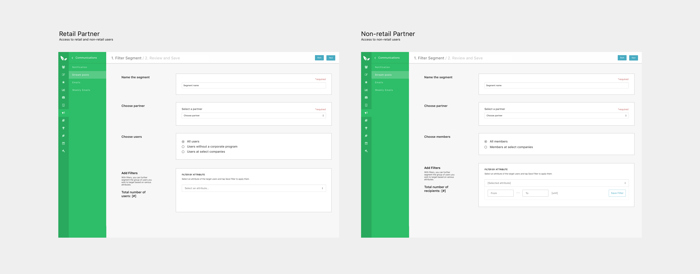
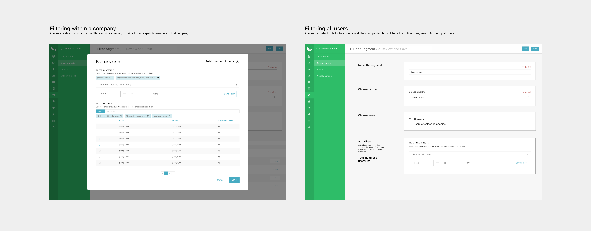
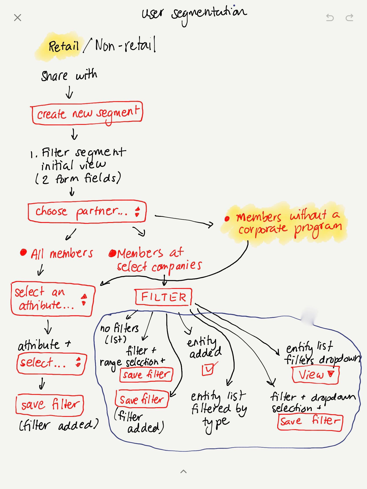

Background
In the Fall of 2018, I interned at Sprout, a Toronto-based startup that aids in the health and wellness of their client's employees by encouraging a more active lifestyle. They offer 3 platforms: a mobile app available on iOS and Android, a web application, and a partners platform. By providing thousands of employees a platform to help them reach fitness goals, connect with coworkers, and earn rewards for their achievements, Sprout aims to enhance the lives of workers, aid in their wellbeing and create a better work environment.
Sprout was my first design job and it gave me the opportunity to learn about web and mobile design, working closely with product owners, managers, shareholders, fellow designers, and developers. During my four month internship, I focused on two new features for Sprout's Partners Platform and refactoring parts of their mobile UI for their Mobile 3.0 launch in November 2018. I consistently had to research implementing design systems for cross-platform applications.
Partners Platform

The Sprout's Partners Platform is a central web portal that is regularly accessed by administrators of Sprout partners and companies, letting them create content and monitor the progress and impact Sprout was making on their employees. I was the main UI/UX Designer for creating the user experience, work flow analyses, wireframes, and mockups for my team. A new feature I worked on was User Segmentation.
User Segmentation
The Problem
Sprout is a great solution for companies looking to emphasize the importance of wellbeing to their employees with a fun and interactive method. Companies using Sprout can access the Partners Platform to perform activities such as invite employees to events, send out emails, create stream posts, start communities for employees with similiar interests, and work with our client success team to think of new challenges that get users more engaged in the program. By doing so, clients maximize their usage of Sprout and get employees excited and more active on the platform. However, these administrators on the Partners Platform lack a means to target specific user groups for these communities, challenges, and events which could personalize the experience for both the administrator and the web and mobile users.
My Role
For this project I worked on a small team of two developers and one product owner and acted as the principle designer for the new feature. I designed the workflow, web interface, and user scenarios. Throughout the process, I regularly scheduled meetings with the Product Owner, the developers, and our Client Success team to identify current customer pain points and ensure we were all aligned in our goals. This meant regularly discussing technical feasibility, measuring implemention time against the importance of design elements, regularly reviewing the platform's design system to keep consistency, and keeping the client in mind at all times.
I was also given the responsibility of creating a Sketch Library for future designers on the Partners Platform, as I felt it really would have aided me when I first took on the project. It simply ensures that the layout remains consistent and straightforward to our end users. I outlined button uses and sizes, a variety of form field states, and the standard error/success message pop-up.
Feature Narrative
End Goal: To create a Partners Platform experience that allows our administrators to create and share their content with targeted groups of users in an efficient, frictionless, intuitive way. The key components of this process are as follows:
1. Different levels of administration - There are two types of users that use Sprout: retail users who aren't directly tied to any company and non-retails users who signed up with a company. Through the platform, administrators should be able to to create and target challenges, events, communities, and communications depending on their level of access on the Partners Platform.

2. Segmentation - The target groups should be able to be filter their members based on entities (partner, companies, challenges, events, etc.) and user attributes (height, weight, gender, etc.)

3. Check before creating - We expect most user segments to consist of 2-4 filters that narrow down the group of users for the admin to specify. They should be able to preview their beforehand creating the segment to prevent bad input
4. Filters - We want to give our admins a multitude of ways to aim their content to specific segments. This means offering filters for whatever their needs are, including age, gender, weight, user's language, height, even health goals and topics they're interested in.
Work Flow Analysis
The user segments have two entry points within the platform:
- Through the main navigational panel under Segments
- When the user is creating an event, challenge, communication, or community
I started with sketching the work flow analysis of creating a user segment, including various situations different users may encounter depending on what they want to achieve.


Conclusion
My internship at Sprout was a starting point in my career as a UI/UX Designer and I'm so thankful for the experience. I learned a remarkable amount about the culture of design in a company, web design principles, enhancing my mobile design practices and the dos and donts of collaborating with developers, stakeholders and PMs. It certainly encouraged me to discover all aspects of the technology community myself in other design jobs, wherever they may be.